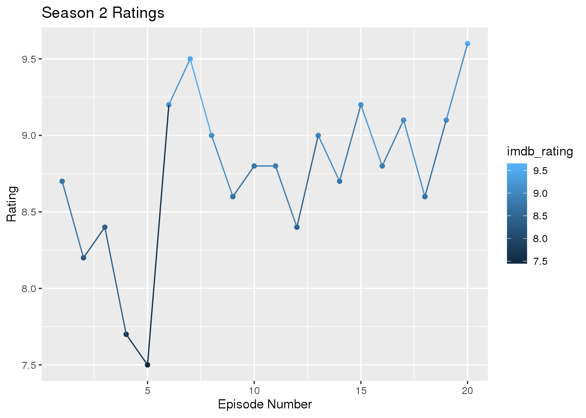

Avatar: The Last Airbender has always been my favorite TV show. World felt alive, the characters are fleshed out, and the magic feels fun and natural. Thanks to the Avatar: The Last Airbender data set on tidytuesday, we are able to go through every line of every script for every episode and do some data analysis.
“Special Move!”
In other kids shows, like Power Rangers, the main characters and will yell say their special moves often, enough to have it ingrained into your head. How often does Avatar: The Last Airbender do this, and who does it the most?
library(tidyverse)
Katara <- avatar %>%
filter(!is.na(character_words)) %>%
filter(character == "Katara") %>%
filter(str_detect(character_words, regex("waterbend", ignore_case = TRUE)))
Katara## # A tibble: 33 x 11
## id book book_num chapter chapter_num character full_text character_words
## <dbl> <chr> <dbl> <chr> <dbl> <chr> <chr> <chr>
## 1 14 Water 1 The Bo… 1 Katara "[Cut to… "It's not \"ma…
## 2 180 Water 1 The Bo… 1 Katara [Amused.… Hehehe, Aang, …
## 3 182 Water 1 The Bo… 1 Katara [Sadly.]… No. You're loo…
## 4 244 Water 1 The Av… 2 Katara [Angrily… To find a wate…
## 5 261 Water 1 The Av… 2 Katara [Roundin… You happy now?…
## 6 395 Water 1 The Av… 2 Katara [Brighte… Well, if we go…
## 7 500 Water 1 The So… 3 Katara [Innocen… Uh ... Just a …
## 8 561 Water 1 The So… 3 Katara [Camera … And this one's…
## 9 1255 Water 1 Impris… 6 Katara How can … How can you sa…
## 10 1913 Water 1 The Wa… 9 Katara [Smiling… Look at this, …
## # … with 23 more rows, and 3 more variables: writer <chr>, director <chr>,
## # imdb_rating <dbl>grep(Katara, "water")## Warning in grep(Katara, "water"): argument 'pattern' has length > 1 and only the
## first element will be used## integer(0)Highest and Lowest Rated Episode for Each Season
Avatar: The Last Airbender is a great TV show, but as with anything, there will always be favorites and least favorites. What episodes are the highest and lowest rated, and what is it for each season?
Ratings Over Time
Does Avatar: The Last Airbender improve or get worst with time? As with any shows, it’ll have valleys and peaks, so where do they occur?
library(patchwork)
library(tvthemes)
seasonrating <- avatar %>%
select(book_num, chapter_num, imdb_rating) %>%
distinct()
waterrating <- seasonrating %>%
filter(book_num == 1) %>%
ggplot(aes(x = chapter_num, y = imdb_rating, color = imdb_rating)) +
geom_point(aes(color = imdb_rating))
earthrating <- seasonrating %>%
filter(book_num == 2) %>%
ggplot(aes(x = chapter_num, y = imdb_rating, color = imdb_rating)) +
geom_point()
firerating <- seasonrating %>%
filter(book_num == 1) %>%
ggplot(aes(x = chapter_num, y = imdb_rating, color = imdb_rating)) +
geom_point() +
geom_line()
waterrating## Warning: Removed 1 rows containing missing values (geom_point).
firerating## Warning: Removed 1 rows containing missing values (geom_point).## Warning: Removed 1 rows containing missing values (geom_path).Most Chattiest Characters
Who talks the most in the show? There are many candidates, like Azula and her silver tongue, Katara saying the opening each episode, and Sokka with his witty quips. But who says the most lines in the show?
library(ggplot2)
library(patchwork)
library(tvthemes)
lines <- avatar %>%
filter(!is.na(character_words)) %>%
group_by(character,book) %>%
summarise(Lines = n()) %>%
arrange(Lines, descending = TRUE)
waterlines <- lines %>%
filter(book == "Water") %>%
tail(n = 5) %>%
ggplot(aes(x = character, y = Lines, fill = character)) +
geom_bar(aes(reorder(character, Lines)), stat = 'identity') +
theme_avatar() +
coord_flip() +
scale_fill_avatar(palette = "WaterTribe") +
theme(legend.position = "none")
earthlines <- lines %>%
filter(book == "Earth") %>%
tail(n = 5) %>%
ggplot(aes(x = character, y = Lines, fill = character)) +
geom_bar(aes(reorder(character, Lines)), stat = 'identity') +
theme_avatar() +
coord_flip() +
scale_fill_avatar(palette = "EarthKingdom") +
theme(legend.position = "none")
firelines <- lines %>%
filter(book == "Fire") %>%
tail(n = 5) %>%
ggplot(aes(x = character, y = Lines, fill = character)) +
geom_bar(aes(reorder(character, Lines)), stat = 'identity') +
theme_avatar() +
coord_flip() +
scale_fill_avatar(palette = "FireNation") +
theme(legend.position = "none")
earthlines
waterlines + earthlines + firelines
Best Writer(s) Award (According to the Viewers)
The writers of this show are some of the best. They are able to write a compelling story line while adding funny jokes and character growth along the way. But who, or which group, has the highest average rated episodes?
writer <- avatar %>%
select(book_num, chapter_num,writer, imdb_rating) %>%
group_by(writer) %>%
summarise(score = mean(imdb_rating)) %>%
filter(!is.na(score)) %>%
arrange(score, descending = TRUE)
#mutate(str_extract(writer, regex("[^,]*{1}")))
writer## # A tibble: 22 x 2
## writer score
## <chr> <dbl>
## 1 James Eagan 7.8
## 2 Ian Wilcox 7.9
## 3 John O'Bryan, Aaron Ehasz 7.9
## 4 Matthew Hubbard 8
## 5 Michael Dante DiMartino, Bryan Konietzko, Aaron Ehasz, Peter Goldfing… 8.1
## 6 Nick Malis 8.2
## 7 John O'Bryan 8.30
## 8 Michael Dante DiMartino, Bryan Konietzko, Aaron Ehasz, Peter Goldfinge… 8.3
## 9 Joshua Hamilton, Michael Dante DiMartino 8.4
## 10 Katie Mattila 8.5
## # … with 12 more rowsggplot(data = tail(writer, 10), aes(x = writer, y = score, fill = writer)) +
geom_bar(aes(reorder(writer, score)), stat = 'identity') +
xlab("Average IMDB Score") +
ylab("Writers") +
scale_fill_discrete(labels = c("apple","banana")) +
ggtitle("Average IMDB Score for Each Writer(s)") +
theme(axis.text.x = element_blank())